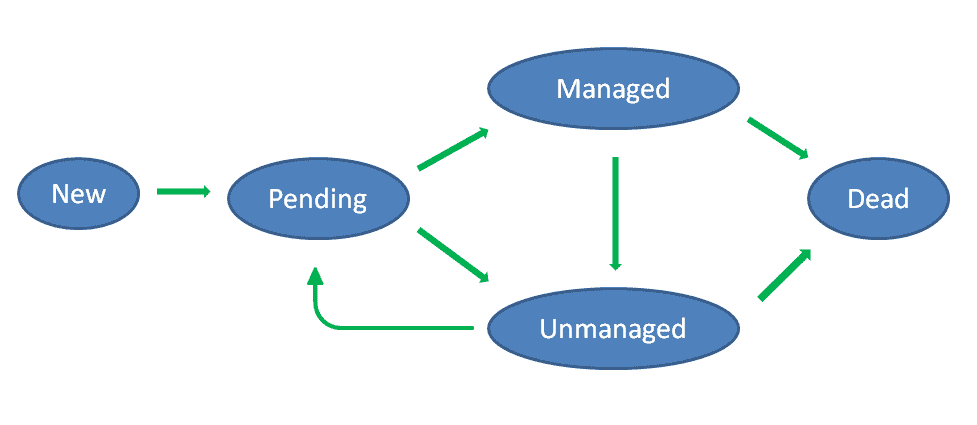

Membalance dynamically balances memory allocation between Xen virtual
machines (domains) in response to varying memory demand (memory
pressure) within guests.
RATIONALE
One
of the purposes of virtualization is to co-deploy virtual machines on
the same physical host to
improve the utilization of physical resources, such as CPU cycles,
storage
devices, IO bandwidth etc., by multiplexing these resources
among
the VMs, very much like a generation earlier their utilization was
improved by
a transition to multi-tasking and multi-user time-shared operating
systems and multiplexing physical resources between users and
concurrent processes.
Like any computing entity reflecting human
activity (and some of automated activity as well), virtual machines
more often than not exhibit an uneven load
pattern significantly varying over time. Production system are likely
to exhibit load depending on time of the day, business cycles, schedule
for generation of reports, unpredictable factors like
interactive
and market customer behavior etc. Development and test/staging systems
and standby/failover instances may exhibit even more uneven load
pattern.
Hypervisors
normally allow dynamic and adaptive reallocation of resources
between the VMs to meet
these fluctuating workload demands, including bursty and peak
loads. This applies to reallocation of CPU cycles between the VMs,
sharing of IO bandwidth and (possibly thinly provisioned) storage. A
similar need also exists for dynamic reallocation of main memory
between the VMs. Higher loads may require an increased amount of
pseudo-physical memory available to a virtual machine. Insufficient
memory is likely to result in increased paging rate and file
system cache miss rate, due to insufficient cache size, leading to
lower performance and the waste of IO bandwidth to re-read pages and
file data from storage devices. Therefore it normally pays off to
increase
memory size of a virtual machine that has significant memory pressure, at
the cost of shrinking other machines with low current demand for main
memory.
Such
an adjustment very much represents a carry-over of a concept of dynamic
adjustment of process working (resident) sets into the era when a locus
of “multiuserness” largely moved or extended from
processes/jobs
within an OS to
VMs within a hypervisor.
Broadly, there are two complementary approaches to dynamic partitioning
of memory between the VMs.
- One is dynamically adjusting memory size of individual VMs,
according to current memory demand of the VMs.
This approach parallels dynamic adjustment of process working/resident
set in a traditional OS.
- The other approach is using Transcendent Memory.
It
allocates a region of hypervisor memory for VMs to use as an “extended
memory” accessible only indirectly on a block basis (remember IBM PC,
DOS and “extended memory” drivers?) and used as a shared area for page
and file system caches. When a VM does not have sufficient main memory,
it can use Transcendent Memory as an overflow area.
There are two basic forms of Transcendent Memory: clean data pools and
modified data pools.
In
a traditional OS, a memory is (broadly) divided between per-process
working sets (or sometimes single global working set in operating
systems that do not have a notion of per-process working sets, like
e.g. Linux), Modified Page List and Free Page List maintained in a
LRU-like order.
When a page is evicted from a process working/resident set, it
experiences the following transitions.
An evicted page that has not been modified is put on the free list:
process working set
-> Free Page List
Pages
on the Free List are considered to be available for grabbing and reuse
in case memory is needed, since their content can be reconstructed by
reading it again from a backing store (such as a paging or image file).
On
the other hand, if page on the Free List is referenced by a process
that needs it, it can be refaulted into that process’ working set, at
which point the page is removed from the Free List.
An evicted
page that has been modified by a process is put on the modified list
first. If referenced by the process soon again, it can be re-faulted
into that process’ working set and removed from the Modified List. If a
page on the Modified List stays unreferenced for some time
(and
thus not returned back to process working set) it may be flushed to a
backing storage like a page file or original file (if originates from a
memory-mapped file mapped as writable), at which point the page
becomes “clean” and can be put on Free List:
process working set
-> Modified Page List -> Free Page List
Transcendent Memory translates this traditional OS paradigm into the
realm of hypervisors.
TMEM clean pools represent an equivalent of Free List.
TMEM modified data pools represent an equivalent of Modified List.
Guest
operating systems are free to use TMEM pools for caching both virtual
memory page and file cache pages, and in guest OS’es with integrated
VM/FS cache this happens more or less automatically.
Very much
like with pages cached in a traditional OS’es Free List, TMEM is free
to drop cached pages from TMEM clean pools at any time to reclaim
memory when a hypervisor needs memory, since the content of these pages
can be reconstructed by reading it from the backing store. Pages from
modified-data pools are not dropped.
Current TMEM design for Xen
(and TMEM interface specification) fall somewhat short of their
OS-level antecedents, by not defining a way for a dirty page to
transition from modified-data TMEM pool to clean-data cache. Such a
transition would require TMEM manager to notify guest OS of
hypervisor’s increasing need for memory, and its insistence that guest
OS writes out pages kept in modified-data TMEM pool and transitions
them to clean pages (held either inside the guest or in TMEM clean-data
pool), ready to be reclaimed. Guest OS cannot make a decision that such
a transition is needed on its own, since the need for it is steered by
the knowledge available only to the hypervisor and by the policy
managed by hypervisor – thus a transition can be requested only by the
hypervisor. Yet TMEM currently does not define a
guest/hypervisor
interface to facilitate such a communication.
Otherwise TMEM
design parallels traditional OS memory split-up between process working
sets, Modified Page List and Free Page List.
Transcendent
Memory is a viable technique of improving overall system performance.
Beyond acting as a global cache aggregating pages from multiple VMs
(clean-pool pages are retained and dropped in LRU-like fashion,
optionally adjusted by per-VM share
weights and caps),
and thus providing more extra memory to those VMs that currently are in
a heavier need of memory, it also offers less obvious modes
of optimizations. Pages can be compressed and de-duplicated. Also TMEM
is
able to use the kinds of memory less suitable as regular main memory,
for example memory blades built of slow cheap RAM (yet much
faster
than Flash memory) located in far NUMA nodes.
Yet, Transcendent Memory is not suitable as a total replacement for
dynamic adjustment of memory size of individual VMs.
Indeed,
if host system were to be configured to run undersized VMs (i.e.
statically configured with memory size well below that VM peak memory
utilization), and relying on TMEM pool to keep their “overflow pages”
during the periods of elevated load, such a configuration would induce
the following kinds of overhead:
- high rate for invocation intra-guest algorithm determining
which page to evict
- copyout of evicted page to TMEM (hypercall + memcpy + list
management)
- copyin of cached page from TMEM (hypercall + list
management + memcpy)
- updates to virtual memory structures if the page represents
an address space page (rather than FS cache page)
- updates to file system cache structures (for pages in FS
cache)
- if
TMEM does not define preswap pool, then premature writing out of dirty
pages (to move them to the clean list, in the conditions of intra-guest
main memory shortage)
- if TMEM does define preswap pool,
then this raises an issue about its handling mentioned earlier (lack of
guest notification)
- if
domain experiences high need in mapped virtual memory (as opposed to FS
cache), TMEM is not the most satisfactory solution since the access to
TMEM pages is only indirect
and they cannot be mapped directly into process address space, thus
every reference to a missing page (held in TMEM) is liable to cause a
page fault with all the overhead of page fault processing
If follows then that an optimal approach
to dynamic memory partitioning would involve both basic approaches as
complementary – dynamic adjustment of memory size of individual VMs coupled with the
use of Transcendent Memory.
Generally,
the size of VMs would be adjusted to represent longer-term envelope of
their memory need, estimated on the basis of some indicators and
predictive logics, and policy-balanced against the needs of other
co-running VMs.
Whereas Transcendent Memory would:
- Accommodate shorter-term overflows beyond this envelope
(intra adjustment ticks).
- Dampen the errors in prediction/estimates of
memory needs of individual VMs compared to their actual needs
This is crucial, as
behavior of real-world programs and systems does not fit analytic
models.
All
models and heuristics for estimation of VM “true working set” and
prediction of its change over forecasted time interval have only
limited predictive capacity, so mis-predictions are a given.
Without
Transient Memory, if a domain size is mis-predicated on
lower-than-actual size, evicted page is totally lost and would have to
be re-read.
True, the amount allocated to Transient Memory pools
can be divided on some basis among individual VMs and thus buttress the
available memory in the domain. However misprediction means that in
some domains this extra memory will be under-utilized, meaning in turn
that needy domains will effectively receive less memory compared to a
globally pooled configuration. If a memory pool is split among domains,
the efficiency of its use is vulnerable to split ration misprediction.
It it is held as a whole, with pool pages used on actual LRU-like
basis, the need to predict and the impact of misprediction is
eliminated.
The intent of Membalance is to (eventually)
provide such an integrated memory balancing facility, along with other
features such as pluggable policy module that can be customized
according to site-specific needs. The roadmap and work plan for
Membalance is outlined in FUTURE WORK/ROADMAP section below. The scope
of initial version of Membalance (0.1, implemented so far) is to:
- Create
a harness that hosts the rebalancing algorithm and provides it with
runtime facilities to monitor hosted domains, manage their properties,
resize them, respond to sysadmin management interface etc.
- Provide an initial version of rebalancing
algorithm that would be sophisticated and practical enough to be usable
as a foundation for production-grade memory rebalancing facility.
- Identify the shortcomings of Xen domain and memory
management API that are an obstacle for any production-grade memory
balancer.
There are two principal ways a memory balancer can collect the
information on which to base its memory allocation decisions.
- One
approach is application-agnostic and is based on monitoring low-level
indicators of operating system or observed on OS/hypervisor boundary.
- Another approach,
potentially more suitable for VM deployments running a single
primary-importance application, is to rely on the data supplied by such
an application about its memory needs. For example, a database engine
is likely to be better positioned and more qualified to make a
more accurate reasoning about its current and predicted memory needs
than an application-agnostic probe monitoring the whole VM without the
knowledge and understanding of application internals.
The
initial version of Membalance uses the first approach, but later may
explore the second option as well and provide an interface for the
latter option (in practice, this would require to combine data from
application-specific probes with data reported by application-agnostic
probe, to cover kernel-managed resource usage that an application
cannot easily account for).
There
is a number of approaches a
balancer can measure memory pressure inside a domain. (See section
REFERENCES below.) For example, VMware ESX estimates VM’s memory usage
intensity by sampling page reference frequency. Every sampling interval
a certain
number of pages in a VM (in the order of 100 to 300
pages) selected
at random are marked by the hypervisor as inaccessible, and the
hypervisor then counts the percentage of these pages that are
referenced by the guest over the sampling interval. The advantage of
this technique is that it does not need to rely on OS-specific probes
and indicators. The obvious disadvantage is that although the
sampling of this kind helps to assess the activity within the VM’s
active working set (interpreted by ESX to infer the estimate of idle
memory percentage and impose “idle memory tax”), it does not provide a
reliable and reliably
comparable indicator of expansion pressure.
Membalance
therefore opts to rely on OS-specific probes. Each VM subject to being
dynamically resized by Membalance runs a probe that collects memory
pressure data based on OS-specific indicators and reports this data to
Membalance controller (daemon) running in Dom0. The controller relies
on reported memory pressure data (comparison of reported memory
pressure within the managed domains) plus policy settings to make a
reasoning about the desired change in allocation of host
memory
between the domains.
In this respect,
participation by a domain in Membalance is semi-voluntary – as with any
scheme relying on in-guest probes.
An
in-guest actor with guest-level administrator rights can suspend or
terminate
the execution of the probe. If Membalance does not receive probes
reading, at first it temporarily stops managing memory allocation of
this domain, except for the situations of significant memory need by
the host, in which case the domain can be shrunk. If domain has not
reported memory pressure data for some time, established by one of
Memprobe policy settings, and the domain is sized above its quota, it
is shrunk down to its quota.
An in-guest actor with guest-level
administrator rights can also fake probe data (or OS data the probe
relies on, such as hard page fault rate), making the probe to falsely
report high memory pressure inside the domain, and prompting Membalance
to increase memory allocation to the domain. This reliance and
limitation are inherent with any scheme relying on in-guest probes.
This normally is not an issue when increased domain memory allocation
results in increased billable utilization for higher memory usage, but
may be an issue when resource use is not accounted or charged for.
A better indicator of memory pressure is the rate for eviction of old
pages from virtual memory and file system caches, in order to replace
them with missing data read from storage devices holding paging/swap
space and data files. (When Transcendent Memory is used, this would
also include reads from Transcendent Memory pools.) Most operating
systems do not expose this kind of statistics in their stock
uninstrumented kernels, however they usually do expose a close proxy:
- aggregate hard page fault rate + block read rate into file
system cache
- taken under additional filter requirement that a percentage
of free memory inside guest must be low
- as there is no point expanding guest that has substantial
free memory inside it
- when there is substantial memory available inside guest,
even high IO and paging rates do not indicate high memory pressure
This is the construction of OS-level indicator that Membalance probe
currently reports.
When percentage of free memory inside guest is below a threshold,
Membalance probe reports aggregate hard page fault rate + block IO rate
into file system cache.
When percentage of free memory inside guest is above a threshold,
reported rate is 0.
Note that the described indicator very much parallels the traditional
indicator of
process paging rate within a conventional OS, with the following
translations:
| OS |
→ |
Hypervisor |
| process |
→ |
virtual machine |
| process working set | → | virtual machine memory allocation |
| page faults |
→ |
hard page faults + block read into file
system cache |
and with aggregate block/page IO statistics at VM/Hypervisor boundary
taking the role of page fault statistics at process/OS boundary.
There is a situation however, in which this simple indicator may be
thrown off significantly and yield false reading of high memory
pressure. If a VM performs the scan of large data set (e.g. full-disk
search) using cached IO primitives, i.e. accessing data that it does
not really want or intend to cache, but indicating caching intent
through the use of cached IO access, the probe will likely observe very high
read rate into file system cache, and since the
application misuses cached IO primitives for its data scan, data
scanned by the application will fill guest file system cache, resulting
in low guest free memory. This will create a combination of the
conditions that will cause the indicator to falsely report high memory
pressure within a domain. A proper way to address this situation is to
avoid it in the first place by application using O_DIRECT and/or
posix_fadvise(POSIX_FADV_DONTNEED) on Linux and
FILE_FLAG_NO_BUFFERING on Windows. Still it may be possible that a
VM is processing a data set with a stock application developed without
handling large data sets in mind, e.g. running grep
on a multi-gigabyte file set. The indicator will then report a false
reading of high memory pressure. An indicator with more complex
construction would be able to discern this situation by looking at
cache use pattern (such as perhaps excluding from its report pages that
are evicted before ever being re-referenced), but the implementation of
such a refined indicator would be invasive for guest OS.
With
Linux probe, there is currently also another issue. IO statistics in
stock Linux kernel does not disaggregate cached and non-cached reads
(i.e. block reads performed on files opened with O_DIRECT and without
O_DIRECT), so an application such as database engine performing
non-cached reads may cause the indicator to falsely report high memory
pressure. The likelihood of this is reduced by free-memory percentage
filter condition, which mitigates the problem, however in the longer
run it would be desirable to include Linux kernel patch that accounts
for page-in operations due to O_DIRECT files, and thus allows to
exclude those operations from the total statistics, leaving only cached
reads and page faults.
A construction
of Membalance algorithm for reallocating memory between the domains is
described below in section REBALANCING ALGORITHM.
USING MEMBALANCE
Membalance build process is described in howto-build.txt.
Installation procedure is described in howto-install.txt.
Virtual
machines running on a particular Xen instance can be designated as to
be managed (automatically sized) by Membalance, or to be left alone and
not subject to automatic memory allocation adjustment by Membalance.
They are termed, correspondingly, as managed and unmanaged virtual
machines.
For a machine to be designated as managed, Membalance-related settings
need to be added to its Xen domain configuration file.
Overall Membalance setup process is as follows:
- A memory pressure probe daemon (memprobe) needs to
be installed into every virtual machine to be managed (automatically
resized) by Membalance.
Memprobe
does not require a configuration.
- A master Membalance daemon needs to be installed in Dom0.
- After installing Membalance, system administator needs to
configure Membalance by specifiying its control parameters in two locations:
- In Xen domain configuration file for every domain that is
to be managed (automatically sized) by membalace.
- In system-wide Membalance configuration file /etc/membalance.conf.
This file contains settings for Membalance daemon.
It also allows to specify default values for Membalance parameters in
domain configuration files.
When Membalance is started, it scans all running virtual machines to
determine if they should be managed. Afterwards, when a new virtual
machine is started, Membalance daemon notices it and begins similarly
examining whether it should be managed by Membalance.
While virtual machine is being examined, it is in the state termed pending.
Possible outcomes of the pending state are:
- Membalance daemon detects that machine is to be managed,
and its configuration is valid, and consistent, and begins managing it.
The VM is said to transition to managed state.
- Membalance
daemon detects that machine is not to be managed (i.e. has no Membalance settings in its Xen domain configuration file).
The VM is said to transition to unmanaged state.
- Membalance
daemon detects that machine has Membalance-related settings in its
configuration file, but these settings are incomplete or inconsistent.
A diagnostic message is issued, and the VM istransitioned to unmanaged
state.
While VM is running, it is possible for it to transition from the
managed to unmanaged state in the following events:
- Domain settings are updated (e.g. by changing defaults in /etc/membalance.conf)
and new domain settings become incomplete or inconsistent.
- Hard unexpected error inside Membalance or Xen.
It
is also possible to instruct Membalance to re-examine a previously
unmanaged
domain, and to start managing it assuming the settings for the
domain are valid.
Domain state transition diagram:

The following membalane-related settings can be specified in a domain
configuration file:
| Parameter
name |
Explanation |
membalance_dmem_min
|
Minimum size that domain can be shrunk to in the event
of memory shortage.
Low-data-rate domains are likely to be sized between dmem_min and dmem_quota.
This setting can be though of as a practical domain size for very
low-rate domains in the event of a memory-constrained system.
|
| membalance_dmem_quota |
Memory quota for a domain
Quota setting approximates domain size on a memory-constrained system
in the event a domain keeps creating data read-in load.
This is a practical domain size limit for low- or mid-rate domains. |
| membalance_dmem_max |
Maximum size a domain can be expanded to.
This approximates domain size on a memory-abundant system in the event
a domain keeps creating data read-in load.
This is a practical domain size limit for high-rate domains. |
| membalance_dmem_incr |
Membalance can automatically vary a
domain’s memory size in range dmem_min
to dmem_max.
The values of dmem_quota,
rate_high, rate_low, dmem_incr
and dmem_decr
control this automatic adjustment of domain memory size.
Domain has a greater claim to memory if its data read-in rate (i.e.
virtual memory hard paging rate plus file system page cache block
read-in rate) exceeds rate_high,
the smallest claim if its rate is below rate_low, and
intermediate claim if its rate is in between rate_low
and rate_high.
The strength of the claim also depends on the current size of a domain,
most importantly its relationship to dmem_quota.
Slightly simplifying, the strength of domain’s claim to memory is
definied by its classification within the following categories:
domain
size |
domain
rate |
| <= dmem_quota |
>= rate_high |
| <= dmem_quota |
rate_low
... rate_high |
| > dmem_quota |
>= rate_high |
| > dmem_quota |
rate_low
... rate_high |
| (any) |
<= rate_low |
(More
rigorous explanation is given below in
section REBALANCING
ALGORITHM,
see the definition of memory pressure functions there.)
Domains in higher tiers have stronger claim to memory.
Within a tier, domains with higher rate have a stronger claim to memory.
Every interval
seconds, Membalance performs an adjustment in the sizes of managed
domains.
If
domain rate and size justify its expansion, Membalance will try to
expand the the domain at the cost of available free memory, or if it is
exhausted then at the cost of shrinking down domains with weaker claim
to memory. Within a single interval, Membalance will try to expand domain that needs to grow by dmem_incr percent
of its current size.
If a domain is to be trimmed down in size, Membalance will normally try
to limit trim amount to at most dmem_decr
percent of its current size within a single interval. However in the
event of dire free memory shortage and pressing needs by other domains
with stronger memory claim, Membalance can trim domains by more
than dmem_decr,
even all
way down to dmem_min.
Defaults values (unless overriden on system-wide
basis in membalance.conf):
rate_high = 200
kb/sec
dmem_incr = 6% (valid range: 0.5 - 30%)
rate_low = 0 kb/sec
dmem_decr = 4% (valid range: 0.5 - 10%)
It is recommended to leave dmem_incr
and dmem_decr
fairly small so as to prevent excessive Membalance over-adjustment, but
still substantial. Normally default values are adequate.
Generally with default interval
value of 5 seconds, reasonable value for dmem_incr ought not
exceed 10%. It is also reasonable to keep the value for dmem_decr somewhat
below that of dmem_incr,
so domains would inflate fast when they need memory but deflate slower. |
| membalance_dmem_decr |
|
| membalance_rate_high |
|
| membalance_rate_low |
|
| membalance_rate_zero |
If guest reported data read-in rate is
<= rate_zero,
the rate is considered to be zero regardless of the value reported by
the guest.
This value represents a limen of Membalance sensitivity, and rate
values below it are considered to have no significance.
Default is 30 kb/s unless overriden on system-wide basis in membalance.conf. |
| membalance_guest_free_threshold |
If guest system has more than guest_free_threshold
percent of free guest system memory, its data read-in rate is
considered to be zero regardless of the reported rate value.
Default is 15% unless overriden on system-wide basis in membalance.conf. |
| membalance_startup_time |
Estimated threshold on domain guest OS startup time.
If domain uptime is less than startup_time and
domain did not start to report rate data yet, it may be given a benefit
of the doubt that it did not have a good-faith chance to start memprobe daemon yet
and accorded a somewhat more lenient treatment in certain memory
shortage situations compared to older non-reporting domains.
Default is 300 seconds unless overriden on system-wide basis in membalance.conf. |
| membalance_trim_unresponsive |
Membalance will trim domain memory allocation down
to dmem_quota
if a domain has not been reporting its data read-in rate data (e.g. memprobe daemon
stopped running in the guest) for trim_unresponsive
seconds, while domain has been staying runnable over this time, and
domain size is over dmem_quota.
Default is 200 seconds unless overriden on system-wide basis in membalance.conf.
If set to 0, no trimming of non-reporting domain is performed. |
| membalance_trim_unmanaged |
Membalance will trim domain memory allocation down
to dmem_quota
when a domain is transitioning from managed to unmanaged state, in case
its size is above dmem_quota.
Possible values: yes/true or no/false.
Default is yes
unless overriden on system-wide basis in membalance.conf.
|
The value for a domain parameter can be set in its Xen configuration
file, or defaulted to system-wide default value configured in /etc/membalance.conf,
or defaulted to a hardwired Membalance default:
Parameter
name in
Xen domain config file |
Parameter
name in
/etc/membalance.conf |
Hardwired
default |
membalance_dmem_min
|
(none) |
(none) |
| membalance_dmem_quota |
(none) |
(none) |
| membalance_dmem_max |
(none) |
(none) |
| membalance_dmem_incr |
dmem_incr |
6% |
| membalance_dmem_decr |
dmem_decr |
4% |
| membalance_rate_high |
rate_high |
200
kb/s |
| membalance_rate_low |
rate_low |
0 kb/s |
| membalance_rate_zero |
rate_zero |
30 kb/s |
| membalance_guest_free_threshold |
guest_free_threshold |
15% |
| membalance_startup_time |
startup_time |
300 sec |
| membalance_trim_unresponsive |
trim_unresponsive |
200 sec |
| membalance_trim_unmanaged |
trim_unmanaged |
yes |
On a large installation managing many domains a sound policy would
be to define Membalance settings for a given category of domains in a
separate file and use Python import statement to include this file into
a particular domain’s config file, overriding the settings in the
domain config file only when necessary. This Membalance definition file
may in turn derive from a higher-level file and this way a hierarchical
inheritance of Membalance settings is possible.
If membalace_dmem_max
is not specified in a domain configuration file, it is defaulted to the
setting of maxmem
(and if maxmem
is not specified, then to memory).
If membalace_dmem_quota
is not specified in a domain configuration file, it is defaulted to the
setting of memory.
If membalace_dmem_min
is not specified in a domain configuration file, it is defaulted to the
setting of memory.
The following validity conditions should hold, or Membalance would
refuse to manage a domain with approproate diagnostic message:
dmem_min
<= dmem_quota
<= dmem_max
<= maxmem
dmem_min
< dmem_max
rate_low
< rate_high
A common sense should be exercised to avoid setting the value
of maxmem
much higher than it realistically needs to be. High values of maxmem come at a
cost. Guest operating system typically preallocates a descriptor for
every physical page (PFN) it manages, whether owned by the
balloon driver or not. These structures (in Linux case, struct page) occupy
approximately 1-2% of physical memory being managed. Therefore, if maxmem is
arbitrarily set let us say 10 times higher than initial domain memory
size, then 10-20% of domain’s initial size would be lost to these
structures, with corresponding impact on guest’s available free memory
at initial domain size. (Hopefully, hotplug memory interface would
allow to deal with this issue better.) This is especially important to
keep in mind when dmem_min
is less than initial memory
setting: if a domain is shrunk down to dmem_min, the share of page
management structures in total memory allocated to a domain can do even
higher. For instance, if dmem_min
is 3 times less than memory,
and maxmem is 10 times higher than memory,
than after shrinking the domain to dmem_min,
page management structures can start occupying 30-60% of total domain’s
memory, severely reducing free memory available within a domain, with
an impact on a domain’s guest OS stabillity. In particular, low values
of dmem_min
(especially coupled with high value of maxmem) increase
the likelyhood of Out-Of-Memory (OOM) process crashes in Linux guests.
Here is a sample Xen domain config file with Membalance settings in it:
name="ub64a"
builder="hvm"
vcpus=2
acpi=1
apic=1
memory="2048"
maxmem="49152"
disk = [
'file:/xenvirt/vm/ub64a/disk.img,ioemu:hda,w',
'file:/xenvirt/iso/ubuntu-desktop-14.04-x64.iso,ioemu:hdc:cdrom,r',
]
serial='pty'
usbdevice='mouse'
vif = [ 'type=ioemu, ip=192.168.122.211, mac=00:26:B9:48:74:da,
bridge=virbr0' ]
sdl=1
vnc=0
vga="stdvga"
videoram=16
boot='c'
membalance_dmem_min='2 gb'
membalance_dmem_quota='4 gb'
membalance_rate_high='1 mb/s'
Once a domain is configured for Membalance (and also appropriate
settings are selected in file /etc/membalance.conf as
described below), domain should be restarted to activate it as managed
by Membalance. In a future versions of Membalance, it would be possible
to activate domain as managed without having to restart it.
File /etc/membalance.conf also
defines several Membalance configuration settings that apply not to
individual domains, but control Membalance operation as a whole:
| interval |
Membalance daemon will perform automatic memory
adjustment of managed domain sizes every interval seconds.
This settings is also communicated to memprobe daemon
instances running in guest domains and instructs them to take memory
pressure reading every interval
seconds and reports their readings to Membalance daemon
running in the hypervisor domain.
Default: 5 seconds.
Valid range: 2 - 30 seconds.
|
| host_reserved_hard |
Membalance will try to leave alone Xen host system
memory in the amount specified by host_reserved_hard.
Membalance will not expand domains if there is less than host_reserved_hard memory
left, nor expand domains by an amount that would leave less
than host_reserved_hard
available. In addition, if host system’s free memory drops
below host_reserved_hard, Membalance will try to shrink managed domains to recover enough memory
to bring the amount of host system available memory back to host_reserved_hard.
This amount is in addition to (on top of) Xen free memory slack, which
is by default calculated by Xen to be 15% of total physical memory
available, unless is set otherwise. Use command
xenstore-read
/local/domain/0/memory/freemem-slack
to find current Xen memory slack (in KBs).
Format: <amount>[optional-space][optional-unit]
Examples:
1024
(default unit is mb)
2000 mb
2000m
3G
3 GB
Default: 0
|
| host_reserved_soft |
Membalance will try to set the amount of host free
memory defined by host_reserved_soft
aside for use only by domains in substantial need of memory.
These are domains below their dmem_quota and with
rate > rate_low,
or domains any size with rate >= rate_high.
This amount is in addition to (on top of) Xen free memory
slack, as described above.
Format: <amount>[optional-space][optional-unit]
Examples:
1024
(default unit is mb)
2000 mb
2000m
3G
3 GB
Default is calculated as:
host_reserved_hard +
10% of (Xen physical memory - Xen free memory slack - Dom0
minimal size)
When
using Membalance, it may be a good practice to keep the size Xen free
memory slack to a minimum (instead of its default size of 15% of
physical memory), and instead reallocate most of slack memory to host_reserved_soft
area. Memory required for starting new virtual machines can be obtained
on demand by membalancectl
free-memory command, as described below.
|
Whenever a setting in membalance.conf
is changed, execute the following command to make the daemon to re-read
the configuration file:
#
service membalance reload
Operation of the daemon can be controlled with membalancectl
command. Its usage summary:
Usage:
list
display domains and memory status
pause
suspend automatic domain memory balancing
[--quiet]
do not print pause level
resume
resume automatic domain memory balancing
[--force]
drop remaining
pause level to zero
[--quiet]
do not print
remaining pause level
free-memory
ensure sufficient amount of free memory
<n>[k|m|g]
specify required
amount explicitly
--config <x.cfg> use the amount requested by domain
config file
[--above-slack] the amount is on top of Xen free memory slack
[--use-reserved-hard] draw on host_reserved_hard if
necessary
[--must]
terminate with
failure status if could not ...
... allocate the full requested amount
manage-domain
<id> request to manage domain that
was in an unmanaged state
manage-domain
--all request to manage all currently unmanaged domains
log-level
[n]
set and/or show logging level
log-sink
[which] set logging sink
to "syslog" or "logfile"
dump-debug
dump daemon internal state to /etc/membalance.conf
show-debug
dump daemon internal state to stdout
--version
print version (membalanced 0.1)
--help
print this text
Common options:
--verbose,
-v
verbose output
-vv
even more verbose output
-vvv
most verbose output
--quiet
quiet operation
--human,
-h
display data in human-readable format
--timeout
<sec>
time to wait for ack from the daemon (default: 10)
To list managed domains, their current memory allocation, rate and
other statistics, execute:
#
membalancectl list
Should
a system adminstartor (for whatever reason) want to perform a
manual intervention, such as manual resizing of one of the managed
domains, or perform other operation that may interfere with automatic
memory control, a good practice is to temporarily suspend automatic
memory rebalancing:
# membalancectl
pause
.... manual operation ...
# membalancectl resume
In
the future this will also be augumented by commands to dynamically
change Membalance setting for a domain after its start-up, such as to
dynamically change domain’s dmem_quota
or to enable/disable automatic memory adjustment for the domain etc.
It
may also be a good practice to reduce Xen free slack to a minumum, and
put this memory reserve under Membalance management instead, keeping it
under host_reserved_soft
(and
thus making it available to domains in need of memory instead of being
kept as a pure standby). To start a new domain then:
# membalancectl
pause
# membalance free-memory --config xyz.cfg
# xl create xyz.cfg
# membalancectl resume --quiet
Membalance daemon can be configured to write log messages either to
system log or to /var/log/membalanced.log.
The following command line options can be added to
/etc/init.d/membalance (after the --daemon
option):
--debug-level
<n> set debug level
--log
instead of syslog, log to /var/log/membalanced.log
Logging can also be dynamically controlled with membalancectl, for
example:
# membalancectl
log-sink logfile
# membalancectl log-level 10
REBALANCING ALGORITHM
Memory scheduling algorithm dynamically balances host memory allocation
between participating virtual machines according to their current
memory demand and according to the settings established by system
administrator.
In general, any dynamic resource allocation algorithm should rebalance
resources taking into the account:
- Dynamically reported current and also projected
need of a computing entity (virtual machine) in a given kind of
a resource, and the impact a shortage in the resource would
have on the performance and forward progress of the entity, and on the
waste of other resources (for instance, if memory allocation to a VM is
insufficient, it may cause high paging rate, or high data read
rate due to insufficient cache size, leading to the waste in CPU and IO
bandwidth resources required to process such paging or data read
requests).
- Relative importance of a given entity compared to other
similar entities.
Some entities (VMs) are more important than others and may be assigned
a greater weight
or share,
so their claim to the resource would have greater strength compared to
the claim of less important VMs.
When all VMs have the same assigned weight or share, the
algorithm is geared towards overall peformance optimizaton of the
executing mix.
More often however, not all virtual machines are equal in imporance,
and system administator would want, in the event of a resource
shortage, to let less important virtual machnines suffer more heavily,
in order to maintain a satisfactory performance of more important
virtual machines. At the extreme, resource allocation is defined purely
by assigned shares,
without taking into account actual current demand by the VMs in the
resource – likely leading to resource allocation to high-weight VMs even in
the event they actually may not need this much of a resource
currently, and the resource stays idle or little-used by those VMs or
some of them, while lower-weight
VMs sufferes a severe shortage of the resource hampering their
performance.
- Therefore, a system administrator should be able to assign
a relative importance to share-based
allocation vs. overall performance-based allocation.
The goal of maintaining best performance of high-importance machines
and the goal of maintaining overall mix performance and resource
utilization are contradictory, and an administrator should be able to
strike a balance between the two – an adjustuble balance.
Administrator shoud be provided with a control that would force high-share VMs to
release some
of the resource they hold – and thus being allocated less than their share value – but
only in the event they do not currently have heavy need in
this resource and
some of lower-weight VMs do have such a need.
To summarize, an algorithm for resource allocation between computing
entities should be driven by:
- Share-based
requirements representing human-defined importance of entities.
- Actual (current/projected and dynamically shifting)
resource demand by individual entities.
- An adjustuble control creating a hybrid aim of these two goals,
i.e. balancing the importance of overall performance and overall host
resource utilization efficiency vs. share-prioritized
allocation.
The initial version of Membalance algorithm, as implemented in
Membalance version 0.1 and as described below, embodies these
requirements only partially. A fuller implementation is to be provided
by a subsequent version of Membalance. Current version of the algorithm:
- Responds to real-time memory demand by individual Xen
domains and embodies few very basic demand projections.
- Has a form of share-based allocation represented by memory
quotas (DMEM_QUOTA) assignable for Xen domains. Currently the value of
quota is assigned by system administrator manually, is a fixed value,
and represents an absolute allocation size rather than a share. In the
future, it may be made dynamically adjustuble (within min-max’ed range)
to move it closer to a traditional share-based allocation.
- The design of the algorithm tries to balance overall
performance vs. granting some share-like guarantees to individual
domains. The balancing control for the two categories
of requirements however is not yet made explicit in a single
adjustable parameter, and is rather embodied in several parameters and
logics than binds them. Adding more integrated and simplified control
is an area for future work.
We will now proceed to the description of memory rebalancing algorithm
implemented by Membalance version 0.1.
The algorithm reasons about current memory demand of individual Xen
domains chiefly on the basis of domain’s data read-in rate
(aggregate of hard page faults rate + file
system cache block read-in rate, kb/sec) over current sampling
interval, with moving averages computed as necessary. The assumption
being that reads reflect insufficient size of page cache or
file system cache in a guest. The intention (not implemented
yet) is to exclude non-cached reads such as direct IO (O_DIRECT) from
the statistics of data read-in rate for Membalance purpose. As a
further heuristics, if guest OS has ample free memory size (e.g. over
15% of total guest memory size), then its read rate is not considered
as indicative of memory shortage. The scheme is vulnerable to
mis-interpreting guests that perform large IO transfers using cached
read functions without actual intention to cache and reuse the data.
The algorithm is invoked every interval
seconds – but only if there is at least one currently managed domain.
If there are no managed domains, the algorithm is not invoked. (Once
there appear managed domains, tick count is incremented accordingly to
refelect elapsed sleep time.)
If automatic domain memory allocation is paused by system
administrator, the algorithm is invoked only to collect data (stage 1
as described below), but does not perform any adjustments (stages 2-4
are not invoked).
The algorithm tries to provide good memory-supply responsivness for
domains that need to expand, while avoiding premature domain
contraction and upsize-downsize thrashing. The algorithm’s motto is
“expand fast, contract slow” (wherever possible at all). To this end:
- Algorithm allows domains to grow in a time of plenty and
trims domains only when there is actual demand for memory. When there
is no demand, domains are allowed to keep memory allocated to them. As
long as available memory stays above HOST_RESERVED_SOFT, there is
currently no proactive reclamation (albeit some forms of it can be
introduced later).
- Algorithm reserves a part of host memory (defined by
HOST_RESERVED_SOFT) for domains in a substantial need of memory,
otherwise keeping it free and immediatelly available for expansion of a
domain when it comes in a substantial need of extra memory.
- Algorithm employs SLOW_RATE moving average to track recent
history of domain’s data read-in rate in order to avoid
premature
contraction of a domain just because it did not show memory demand for
a tick or two.
- Maximum domain expansion amount at a normal interval (dmem_incr) is
larger by default than trimming amount (dmem_decr), unless
the memory is in very short supply, albeit the values are aqjustable by
system administrator.
The algorithm uses the following data items.
Global dynamic values:
| HOST_FREE |
Current amount of host free memory. |
Global settings:
| INTERVAL |
Interval between successive invocations of the
algorithm. |
|
HOST_RESERVED_HARD |
Host memory to leave alone and never consume for
allocation during domain size auto-adjustment by Membalance:
- Membalance will not expand existing domains if such
an expansion
would leave HOST_FREE below HOST_RESERVED_HARD.
- If Membalance detects that HOST_FREE dropped below
HOST_RESERVED_HARD (e.g. because a new virtual machine has been
launched or a domain was expanded manually by the system
administrator) Membalance will try to reclaim memory from domains
managed by Membalance to bring HOST_FREE up to HOST_RESERVED_HARD
again or as
close to it as possible for Membalance
This amount is in addition to (on top of) Xen free memory slack.
|
|
HOST_RESERVED_SOFT |
Host memory between HOST_RESERVED_SOFT and
HOST_RESERVED_HARD is made available only for domains in significant
need of memory:
- Domains with DMEM_SIZE < DMEM_QUOTA and RATE
> RATE_LOW
- Domains any size with data read-in rate
>=
RATE_HIGH
As follows:
- If HOST_FREE <= HOST_RESERVED_SOFT, domain can
only expand
beyond DMEM_QUOTA when its data read-in RATE >=
RATE_HIGH.
This is the only constraint HOST_RESERVED_SOFT imposes on domain
expansion if domain size is below DMEM_QUOTA, domain still can expand
up to DMEM_QUOTA if its RATE > RATE_LOW, regardless of
HOST_RESERVED_SOFT.
- If HOST_FREE drops below (<)
HOST_RESERVED_SOFT, Membalance
will try to shrink those domains that have rate < RATE_HIGH and
size above their DMEM_QUOTA down to but not below DMEM_QUOTA, and will
also try to shrink domains sized below QUOTA and having RATE <=
RATE_LOW.
In other words, a domain can expand above DMEM_QUOTA at the expense of
free memory only if its RATE >= RATE_HIGH and
FREE >
FREE_RESERVED_SOFT.
Note that if FREE memory drops down to FREE_RESERVED_SOFT, a domain can
still expand at the expense of shrinking other domains (rather than
consuming free memory), as explained below in the description of stage
4.
Also, if free memory drops down to FREE_RESERVED_SOFT, membalanced will
initiate shrinking of domains, as explained in (2) above and in stage 3
description below.
As a cumulative outcome, it ensures that memory beyond
HOST_RESERVED_SOFT (but constrained by HOST_RESERVED_HARD) will be
allocated only to domains
(a) within their
DMEM_QUOTA once they needs
it (RATE > RATE_LOW)
and
(b) domains beyond
DMEM_QUOTA but only
having RATE >= RATE_HIGH
This amount is in addition to (on top of) Xen free memory slack. |
Per-domain dynamic values:
|
DMEM_SIZE |
Currently allocated memory size |
| RATE |
Reported data read-in rate for the current
cycle.
Note that memory demand reporting by domains is not exactly
synchronized between domains (synchronized only up to approximately
INTERVAL seconds) and not synchronized with execution of memory
balancing algorithm in membalanced daemon (also synchronized only up to
approximately INTERVAL seconds), therefore when membalanced executes
its next cycle, RATE value may have not been reported by a domain yet,
or reported value may reflect RATE value reported on the basis of
paging/file cache read partly before the previous adjustment and partly
after it (if domain size adjustment has been performed during the
previous algorithm tick).
Therefore:
If no value has been reported for the current tick, value reported in
the previous cycle is re-used.
For this reason values of DMEM_INCR and DMEM_DECR should be moderate,
typically not bigger than 5% and certainly not over 10%, to prevent
rapid swings and overreaction of Membalance mechanism based on
incomplete input.
If domain reported no value for over two cycles, it is excluded from
normal participation in Membalance (consideration for shrinking or
expanding) until it starts reporting rate value again.
Membalance can still shrink non-reporting domain but only as the last
resort measure when trying to meet the goals of HOST_RESERVED_HARD or
manual memory request by system administrator and all other means of
memory extraction have been exhausted (i.e. all participating domains
have been shrunk to their DMEM_MIN size). |
Per-domain settings:
| DMEM_MIN |
Minimum size that domain can be shrunk to in the event
of memory shortage.
Low-rate domains are likely to be sized between DMEM_MIN and DMEM_QUOTA.
This setting can be though of as a practical domain size for very
low-RATE domains.
|
| DMEM_QUOTA |
Memory quota for a domain
Quota setting approximates domain size on a memory-constrained system
in the event a domain keeps creating data read-in load.
This is a practical domain size limit for low- or mid-RATE domains. |
| DMEM_MAX |
Maximum size a domain can be expanded to.
This approximates domain size on a memory-abundant system in the event
a
domain keeps creating data read-in load.
This is a practical domain size limit for high-RATE domains. |
| RATE_HIGH |
High-rate threshold for data read-in rate
(kb/s). |
| RATE_LOW |
Low-rate threshold for data read-in rate
(kb/s). |
| RATE_ZERO |
Data read-in rate <= RATE_ZERO is
considered to be
the same as zero rate and shall not cause domain expansion. |
| DMEM_INCR |
Memory amount to expand domain by (as % of current
allocation). |
| DMEM_DECR |
Memory amount to shrink domain by (as % of current
allocation). |
| GUEST_FREE_THRESHOLD |
If guest free memory (as a percentage of guest
total system memory) is > GUEST_FREE_THRESHOLD, regard domain’s
data read-in rate as zero, regardless of the reported rate.
|
Consistency check condtitions:
RATE_HIGH > RATE_LOW
DMEM_HIGH >= DMEM_QUOTA
DMEM_QUOTA >= DMEM_MIN
HOST_RESERVED_SOFT >= HOST_RESERVED_HARD
GUEST_FREE_THRESHOLD in range 0%...100%
Memory balancing algorithm runs periodically (as defined by the
INTERVAL setting, unless paused by system manager or there are no
domains to manage).
At each algorithm tick, the algorithm executes in four stages:
Stage 1 (data collection):
- Collect data from the domains: for each domain managed by Membalance read its xenstore “report” key and reset the key.
- If in-domain guest operating system has plenty of free
memory (reported guest free memory > GUEST_FREE_THRESHOLD
percent of total guest system memory), treat reported
data read-in rate
as 0, regardless of the reported rate value.
- If domain data read-in rate is <=
RATE_ZERO, treat
reported data read-in rate as 0, regardless of the reported
rate value.
- Disregard domains in the following states: paused, crashed,
dying, shutdown. Only manage domains in the states: running, blocked.
- Disregard non-participating domains (membalance = off).
- Disregard currently non-participating domains (that have
not reported data within more than one cycle/tick).
- If domain has not reported data for the current cycle,
presume reading to be the same as for the last cycle.
- If parameter TRIM_UNRESPONSIVE is set and domain did not
provide rate data reports for over TRIM_UNRESPONSIVE seconds, and
current domain size is over DMEM_QUOTA, the domain is trimmed town to
DMEM_QUOTA.
- Calculate values of SLOW_RATE and FAST_RATE.
These are the values of
RATE that have the history of RATE factored
into them and are used further to compute domain pressure force to
expand, and also domain force of resistance to contraction. We use
these effective values of rate with history factored into them instead
of just the latest reading of RATE so the algorithm stays tuned to
domain rate trend and is not thrown off by temporarily and transient
abrupt in rate reading for just one or two ticks.
FAST_RATE is used to calculate domain pressure force to expand.
SLOW_RATE is used to calculate domain force to resist contraction.
The value of SLOW_RATE is defined as:
SLOW_RATE =
max(slow_moving_average(RATE), RATE)
Slow moving average is taken over a number of recent samples.
In no event SLOW_RATE is less than the current RATE reading.
Right now moving average for SLOW_RATE is hardwired to be taken over
the readings for 5 recent intervals, with decreasing weights for older
intervals. In the future it may be made tunable both on global and
per-domain basis to cover a longer history than currently used five
recent ticks data.
Currently, heuristically, FAST_RATE is just RATE, i.e. most recent
reading of RATE. In the future the formula for calculating FAST_RATE
may me modified to temper down the initial response for infrequent
one-interval intermittent spikes.
If automatic memory adjustment is paused by system administrator,
further stages are not performed.
Stage 2 (free memory HARD
constraint):
Meet HOST_RESERVED_HARD
constraint.
If HOST_FREE dropped below HOST_RESERVED_HARD, try to squeeze managed
domains to bring HOST_FREE back to HOST_RESERVED_HARD or as close to it
as possible.
This stage is performed in several rounds, executed until either the
target for HOST_FREE getting back to HOST_RESERVED_HARD is met, or all
rounds are exhausted and membalanced is still unable to meet the target
for HOST_RESERVED_HARD.
Rounds start with trimming down domains that are least likely to suffer
as the result of the trimming and proceed towards domain that are
likely to suffer more heavily if trimmed.
Round 1. Select
domains with RATE <= RATE_LOW and sort them by the time they had
rate <= RATE_LOW. Starting from domain that had low rate for
longest time and towards domain that had it for shortest time, trim
each domain by up to DMEM_DECR (but never below DMEM_MIN).
Round
2. Select domains with RATE < RATE_HIGH and size
> DMEM_QUOTA, excepting domains already trimmed in the previous
round, and sort them by the time they had rate < RATE_HIGH.
Starting from domain that had rate < RATE_HIGH for longest time
and towards domain that had it for shortest time, trim each domain by
up to DMEM_DECR (but never below DMEM_QUOTA).
Round
3. If still cannot meet the target, select domains with
RATE < RATE_HIGH and size > DMEM_QUOTA, regardless of
whether they were already trimmed in the previous rounds, and sort them
by the time they had rate < RATE_HIGH. Starting from domain that
had rate < RATE_HIGH for longest time and towards domain that
had it for shortest time, and regarless of any previous trimming
amount, trim each domain [additionally] by up to DMEM_DECR (but never
below DMEM_QUOTA) on top of any previous trimming.
Round
4. Calculate pressure-resistance function (as described
below in the write-up for stage 4) for every domain above DMEM_QUOTA
(the advisory value of RATE we use in this calculation is made not
perfectly valid by previous contractions, but this is the best we can
do at this point). Sort the list by the value of the function. Starting
from lowest-pressure domain towards highest-pressure domains, trim each
domain by up to DMEM_DECR (but not brining it below DMEM_QUOTA) until
the deficit is satisfied.
Treat domains that have not reported their rate lately as having zero
rate.
If was unable to satisfy the deficit within one pass, repeat passes
until either the deficit is satisfied or all domains are brought down
to DMEM_QUOTA.
Round
5. If the deficit is still not satisfied at this point,
try to satisfy it by gradually trimming domains from DMEM_QUOTA towards
DMEM_MIN. Recalculate pressure-resistance function for each domain
using the last sampled RATE value for this domain (this is suboptimal,
but the best we can do at this point). Starting from the
lowest-pressure domain towards highest-pressure domain, trim each
domain by up to DMEM_DECR (but not brining it below DMEM_MIN) until the
deficit is satisfied.
Treat domains that have not reported their rate lately as having zero
rate, except if a domain is very young (domain uptime is less
than startup_time
– a parameter assignable on a per-domain basis but also having global
default), in which case the domain is given a benefit of the doubt and
ascribed the rate just above rate_high.
If was unable to satisfy the deficit within one pass, repeat passes
until either the deficit is satisfied or all domains are brought down
to DMEM_MIN.
If deficit is still not satisfied at this point, there is nothing
further Membalance can do, since all domains are now down to their
DMEM_MIN size, and Membalance may not try to trim domains any further.
If all domains are already at their DMEM_MIN or below, quit the
algorithm.
Stage 3 (free memory SOFT
constraint):
Try to meet
HOST_RESERVED_SOFT constraint.
If HOST_FREE dropped below HOST_RESERVED_SOFT, try to trim managed
domains to bring HOST_FREE back to HOST_RESERVED_SOFT or as close to it
as possible.
Unlike the adjustment for HOST_RESERVED_HARD, the adjustment to
HOST_RESERVED_SOFT does not have to be performed instantaneously and
can be performed gradually over a number of cycles (algorithm ticks).
Unlike in HOST_RESERVED_HARD stage, trimming of domains within a single
tick is limited and no excessive trimming is performed to reach the
HOST_RESERVED_SOFT target. Rather, the intent is to reach it gradually
over a number of ticks by only a moderate trimming during each tick.
This stage is executed in up to three rounds.
Round
1. Select domains with RATE <= RATE_LOW and size
> DMEM_QUOTA. Sort the list by the time domain RATE was
<= RATE_LOW. Starting from the domains that had low rate for
longest time, and towards domains that had it for shortest time, trim
each by up to DMEM_DECR (but not below DMEM_QUOTA) until the deficit is
satisfied (i.e. HOST_FREE is increased up to HOST_RESERVED_SOFT).
If domain has already been previously trimmed in current algorithm
tick, it can only be trimmed at this stage to the extent that the total
trim does not exceed DMEM_DECR.
Round
2. If deficit is still not satisifed, repeat in a similar
fashion with domains with RATE <= RATE_LOW but size <=
DMEM_QUOTA. In this round domains are trimmed by up to DMEM_DECR but
not below DMEM_MIN. Similarly to the previous round, trimming is
limited by DMEM_DECR including the trim applied previously within the
same tick.
Round
3. If deficit is still not satisifed, repeat in a similar
fashion with domains with RATE < RATE_HIGH and size >
DMEM_QUOTA.
If still unable to satisfy the deficit, leave it off at this point and
try again at next tick.
To minimize the probability of a jitter of reallocating memory back and
forth between very similar domains (domain upsize/downsize jitter), a
domain that has been expanded not more than shrink_protection_time ticks
back is not considered elgigible for shrinking at stages 3 and 4
(stages “meeting soft free memory constraint” and “domain
rebalancing”). However this protection is not in effect for stage 2
(stage “meeting hard free memory constraint”).
Outlined stage 3 algorithm can also be expressed in terms of effective
pressure function for free memory region (see below in stage 4
write-up).
Future enhancements to the algorithm may also take into account longer
term RATE history for a domain in a more sophisticated way, e.g. its
averaging over long-term period and absolute values of rate.
Stage 4 (domain
balancing):
Perform dynamic domain
expansion or contraction, according to current
memory demand (pressure) of specific domains.
Domains with high memory pressure inside them can be expanded by using
free memory if available or at the cost of shrinking domains with low
memory pressure.
Domains are always expanded at the expense of available free memory
first if free memory is available, and are expanded at the cost of
shrinking other domains only if free memory is unavailable (including
due to the constraints imposed by HOST_RESERVED_SOFT and
HOST_RESERVED_HARD).
There are two memory pressure functions calculated for each domain:
- Pressure-out
(expansion) force indicates “outward-directed” force for
the expansion of this domain.
- Pressure-resistance
force indicates how strongly a domain resists an
attempt to contract it.
(By the way of an example, consider an analogy in the physical world: a
stone rock would have very high pressure-resistance force, but zero
pressure-out force. Same applies to a domain at DMEM_MIN and rate
<= RATE_LOW).
When domain X wants to be expanded, but free memory is unavailable for
the expansion of X, it can expand at the cost of shrinking another
domain Y if pressure-out(X) > pressure-res(Y).
Pressure functions are calculated according to domain size vs. its
DMEM_MIN and DMEM_QUOTA, and its data read-in rate vs. its
RATE_LOW and
RATE_HIGH values as follows:
| RATE |
DMEM_SIZE |
(force_resist)
pressure-res |
(force_expand)
pressure-out |
| >= RATE_HIGH |
> QUOTA |
50 + x |
50 + x |
| >= RATE_HIGH |
MIN ... QUOTA |
100 + x |
100 + x |
| >= RATE_HIGH |
<= MIN |
500 |
300 |
|
|
|
|
| LOW ... HIGH |
> QUOTA |
30 + x |
30 + x |
| LOW ... HIGH |
MIN ... QUOTA |
60 + x |
60 + x |
| LOW ... HIGH |
<= MIN |
500 |
200 |
|
|
|
|
| <= RATE_LOW |
> QUOTA |
0 |
0 |
| <= RATE_LOW |
MIN ... QUOTA |
40 |
0 |
| <= RATE_LOW |
<= MIN |
500 |
0 |
Value of
x
ranges from 0.0 to 1.0 and is calculated depending on
domain RATE. The exact formula for calculating
x is unimportant,
since its only purpose is to represent relative ordering of domains
within the same tier (i.e. having the same pre-“+” base function value
base, or that is to say in the same RATE and DMEM_SIZE category in the
table). Currently
x
is calculated as x = RATE / RMAX where RMAX is a
maximum rate for all managed domains being balanced.
Currently
x
is calculated on the basis of latest reported RATE values
for each domain, however in the future the algorithm may take into
account longer-term history of RATE, for instance domains that had low
RATE for long period of time may be more eligible for shrinking than
domains that had low RATE for only a short period of time, and before
that exhibited a spike of higher RATE activity.
Future version of the algorithm may also introduce the following fine
tuning: among domains with roughly the same RATE, domains with
substantially larger DMEM_SIZE may be more eligible for shrinking and
less eligible for expansion than domains with smaller DMEM_SIZE and
similar RATE.
Important:
if a domain has been contracted within the current algorithm
tick to a full value of its DMEM_DECR (or even beyond it for the sake
of meeting HOST_RESERVED_HARD target), its pressure-resistance function
goes to 500, making the domain ineligible for further shrinking within
the current tick.
Important: Domain
expansion force is defined only for domains that have
recently reported rate data. Domain contraction-resistance force
however is defined also for domains that did not report data recently.
Although such domains do not participate in rebalancing (stage 4), nor
SOFT-targeting (stage 3), nor most rounds of HARD-targeting stage 2,
rounds 1-3), but they do participate in HARD-targeting (stage2) rounds
4 and 5. For this special use case, such domains do have
contraction-resistance force defined as follows:
| DMEM_SIZE |
(force_resist)
pressure-res |
| > QUOTA |
32 |
| MIN ... QUOTA |
62 |
| <= MIN |
500 |
Host free memory area also has effective pressure function ascribed to
it, defined as:
| HOST_FREE |
(force_resist)
pressure-res |
(force_expand)
pressure-out |
| >
RESERVED_SOFT |
0 |
0 |
| SOFT ... HARD |
45 |
35 - 45 |
| <=
RESERVED_HARD |
1000 |
450 |
During stage 3, when HOST_FREE is in SOFT...HARD range,
expansion-pressure function is effectively applied in two steps.
First
it is effectively applied with value of 35, i.e. able to squeeze
domains with RATE = LOW...HIGH and DMEM_SIZE > DMEM_QUOTA.
If it
were impossible to satisfy HOST_RESERVED_SOFT target this way, then
expansion-pressure function is applied again, now with value of 45 and
able to contract domains in the category RATE <= RATE_LOW and
with size DMEM_MIN...DMEM_QUOTA.
Stage 4 of the algorithm runs as follows.
First find out if there are any domains wishing to expand. A domain
wants to expand if its pressure-out function is > 0. In no event
expand domain above DMEM_MAX. If there are no domains to expand, quit.
Sort domains wishing to expand by their pressure-out function and try
to accommodate their expansion requests in the sort order, starting
from the domain with the highest value of pressure-out function and
moving towards domains with lower pressure-out value.
Domain expansion target is normally indicated by DMEM_INCR. However if
domain’s DMEM_SIZE < DMEM_MIN, then the target is expansion to
DMEM_MIN.
Free memory provides the first source for request accommodation.
Free memory supply for all domains is constrained by HOST_RESERVED_HARD
(which is on top of Xen free memory slack, so memory reserved for Xen
free memory slack is left untouched as well).
Free memory supply for domains with RATE < RATE_HIGH and
executing above their DMEM_QUOTA is also constrained by
HOST_RESERVED_SOFT.
A domain expands into free memory to the extent possible, as indicated
by pressure-resistance function of host free memory area (note that if
allocation request causes remaining free memory size to cross
HOST_RESERVED_SOFT or HOST_RESERVED_HARD threshold, then the allocation
is performed accounting for such a crossing, i.e. domain pressure-out
may be high enough to push to the threshold, but not necessarily beyond
the threshold.)
If domain expansion request cannot be satisfied at the expense of free
memory, try to satisfy it at the cost of shrinking other domains.
Sort domains (using another vector, distinct from expansion-order
vector) in the order of their pressure-resistance function, starting
from the lowest value towards the highest. Going from the first
(lowest-resistance) element in this vector towards last (highest
resistance), perform the following:
- If shrink-candidates-vec-domain
==
expand-candidates-vec-domain,
skip this shrink-candidates-vec-domain.
- If pressure-resistance(shrink-candidates-vec-domain)
>= pressure-out(expand-candidates-vec-domain),
terminate the
rebalancing process, as even the weakest shrink candidate will not
yield its memory to the strongest expansion candidate.
- Expand expand-candidate-vec-domain
at the cost of shrinking
shrink-candidate-vec-domain.
Total expansion of expand-vec-domain
in the tick cycle cannot exceed
DMEM_INCR, except for domains sized below DMEM_MIN and expanding to
DMEM_MIN.
Total contraction of shrink-vec-domain
in the whole algorithm tick
cannot exceed DMEM_DECR.
Since pressure-resistance function of a domain can increase while
taking memory out of it if the domain reaches the thresholds of
DMEM_QUOTA or DMEM_MIN, pressure-resistance function may need to be
recalculated at this point and shrink-vector
re-sorted (and shrink
candidate scanning re-started from the lowest index again); and
similarly for expansion candidates vector if the expansion crosses the
thresholds of DMEM_QUOTA or DMEM_MIN of the domain being expanded.
Once domain has been shrunk by DMEM_DECR or more during the current
algorithm tick (this also includes shrinking at stages 2 and 3), its
pressure-resistance function value increases to 500 to reflect this
domain is no longer eligible to be shrunk during the current tick, and
shrink-candidates-vector
must be re-sorted, and scanning re-started
from the lowest index again.
- To reduce calculations, domains that are not eligible to be
expanded
or contracted are removed from the corresponding vectors.
To minimize the probability of a jitter of reallocating memory back and
forth between very similar domains (domain upsize/downsize jitter), a
domain that has been expanded not more than
shrink_protection_time ticks
back is not considered elgigible for shrinking at stages 3 and 4
(stages “meeting soft free memory constraint” and “domain
rebalancing”). However this protection is not in effect for stage 2
(stage “meeting hard free memory constraint”).
In all stages of the algorithm:
- DMEM_INCR and DMEM_DECR are rounded to the closest memory
allocation
quant (typically, Xen page size).
- Domain is never expanded above DMEM_MAX and never
contracted below
DMEM_MIN.
- If domain has been contracted or expanded by amount that
causes its
DMEM_SIZE to reach or cross DMEM_MIN or DMEM_QUOTA, its pressure
functions are re-calculated at this point.
- If domain has been shrunk by DMEM_DECR or more in the
current cycle,
its pressure-resistance function goes up to 500.
If domain has not recently provided data, it is largely left alone and
does not participate in rebalancing (stage 4), SOFT-targeted trimming
(stage 3) and most of HARD-targeted trimming (rounds 1, 2 and 3 of
stage 2). It does however participate in HARD-targeted rounds 4 and 5.
Also if domain has setting trim_unresponsive
defined (or inherited from global configuration), then after staying
non-reporting for trim_unresponsive
seconds, Membalance will trim it down to dmem_quota.
Membalancectl utility provides free-memory command
that is used to
reclaim requested amount of memory for purposes such as starting new
virtual machines. This command invokes procedure sched_freemem(...)
inside Membalance daemon which in turn executes the routine
implementing stage 2 of the algorithm (hard trimming), except it trims
the domain to reclaim the amount of memory determined not by
HOST_RESERVED_HARD, but rather requested by free-memory
command. If domain
was shrunk in the recent tick by membalancectl free-memory command
(or multiple executions of free-memory
command), the aggregate amount
it was shrunk by is used during the next tick time to adjust the amount
calculated by DMEM_DECR, in an attempt to ensure a domain does not get
shrunk by more than DMEM_DECR total within a single tick, except in
dire memory shortage.
After all stages of the algorithm calculate scheduled expansions and
contractions for managed domains, these contractions and expansions are
executed. First all the contractions are executed. Then Membalance
tries to execute the scheduled expansions. The ability
of Membalance to
execute the expansions is contingent on available free memory, which in
turn is contingent on domains ordered to shrink executing their
de-ballooning promptly enough. When executing an adjustment
cycle, Membalance will wait for domains ordered to shrink to
release their
memory for up to a timeout interval derived from configuration
parameters (see domain_expansion_timeout_xxx).
If they fail to release required amont of memory within this time and
Xen stays
short of free memory, Membalance will only expand domains scheduled to
expand to the extent available memory allows it, and will leave the
adjustment of remaining domains till the next tick.
The algorithm may be refined in the future.
Some possible future changes to consider are:
- As free memory is getting in short supply (e.g. crossing
into HOST_RESERVED_SOFT zone), dynamically scale up DMEM_DECR, making
the algorithm a more agressive stripper of the domains with lower claim
to memory. Likewise, if free memory is ample, dynamically scale up
DMEM_INCR making for a faster expansion of the domains in need
of
memory.
- When calculating pressure-resistance function, account for
a time a domain have been in the same category of RATE (<=
RATE_LOW, RATE_LOW ... RATE_HIGH, >= RATE_HIGH). For example,
domains that had low rate for a long time must be squeezable more
easily than domains that had a burst of activity and had been inactive
only for a short time.
Also account for long-term rate history during stage 3 (shrinking
domains to meet HOST_RESERVED_SOFT target) in a more sophisticated way,
such as tracking down average rate over long-time peiod and taking into
account absolute value of rate.
- When calculating pressure-resistance function, account for
domain size. Among domains with roughly the same RATE, domains with
substantially larger DMEM_SIZE may be more eligible for shrinking and
less eligible for expansion than domains with smaller DMEM_SIZE and
similar RATE.
- Shrink long waiters: In severe memory shortage, shrink
domains with low % of execution time, i.e. mostly sleeping (cpu exec
time < 1% of total time, over recent long interval). Reduce size
by 25%?
- Proactively shrink domains that for a long time had
reported high percentage of free system memory inside the domain (as
reported by guest OS).
- Make moving average used to calculate SLOW_RATE tunable on
global and per-domain basis to cover a longer history than currently
used five recent ticks data.
- Record domain size at which it last time had rate
>=
RATE_LOW or RATE_HIGH. When in need of a large block of memory e.g. for
membalancectl free-memory
operation, may try to trim towards this
size either by the whole amount or a significant fraction of it.
- Follow stage 4 (domain rebalancing) by another round of
stage 3 (soft memory constraint). If stage 4 caused an expansion of
some domains at the cost of host_reserved_soft,
then follow-up repeat of stage 3 would allow an immediate compenatory
contraction of weak-pressure domains in order to reclaim memory from
them to restore free memory supply back up to host_reserved_soft
if possible. Currently such a reclamation is delayed until the next
tick.
- Consider the mertis of proactively squeezing the domains
that for a long time reported a low or very low data read-in
rate.
On a larger scale, future refinements to the algorithm should:
- Incorporate in more explicit form a share-based
allocation, perhaps by making DMEM_QUOTA dynamically computable
according to share
values assigned to all managed domains, and then further thresholded
against quota-min
anx quota-max
absolute values (defined as per-domain properties inheritable from
higher-level templates). Similarly, DMEM_INCR, DMEM_DECR and RATE_xxx
may be subject for share-derived
adjustments.
- Present an explicit and simplified adjustment control for
balancing between share-based allocation criterion and overall
performance-based criterion.
DEFICIENCIES OF XEN API
“Testing the waters” with Membalance 0.1 indicated that Xen
currently (4.4) has few functional omissions in the API that
need to be addressed for any automated memory
allocation application to work reliably in a production
environment.
First.
Memory
allocated to Xen domain is composed of three main parts: domain
pseudo-physical memory, videoram and Xen internal per-domain structures
(hereafter we designate them as M, V and X correspondingly).
X
part contains items like shadow page tables, device
data, buffers
used by split drivers, LIBXL_MAXMEM_CONSTANT, LIBXL_PV_EXTRA_MEMORY or
LIBXL_HVM_EXTRA_MEMORY etc.
To properly control memory
allocation to domains, the balancer needs two basic functions: (1) find
current memory allocation, (2) set new memory allocation.
As it
happens, Xen provides two functions (or rather sets of functions): one
returns current M+V+X, the other sets new target for M+V.
Thus
in effect Xen API makes use of two distinct memory scales, one
representing the “visible” size of a domain (M+V scale, as indicated by
domain size target recorded in
Xenstore or by xc_domain_get/set_pod_target
plus
videoram size), the other representing “total” (M+V+X) size.
Unfortunately Xen does not expose the value of X – there is no Xen
hypervisor call that would allow to query it, and it is not returned as
a field in structures like xc_domaininfo_t. Thus there is no way to
relate two scales together and make reasoning about M+V allocation
target pn the basis of M+V+X allocation data.
To make things worse, allocation data available for the “visible” scale
represents only a desired
(target) domain size and tells nothing about its actual size. A
domain can have large memory target
value recorded in Xenstore but being unable to expand, therefore the
value of target
by itself tells nothing about domain’s actual current allocation.
Therefore a reasoning about actual current allocation can be performed
only using xc_domaininfo_t
data (which is on M+V+X scale scale), whereas adjustments to the
allocation can be performed only on the M+V scale – yet Xen provides no
way to translate between the scales.
One might try to
capture the offset between the two scales (as Membalance 0.1 does), but
there is no way to do it on a “spot” basis, it is possible at all (and
then only in an unreliable way) after domain has been runnable and size-stable for
some time, i.e. had both Xenstore-recorded memory target and xc_domaininfo_t.tot_pages
unchanged for some time, and
there should be free memory available in the system, so domain does not
stay under target
being unable to expand towards it and
domain should be runnable and
it should get enough execution time to let the balloon driver to
perform the expansion and
guest OS should be in the state that does not block balloon driver
execution – a set of conditions that balancing application cannot
reliably control.
Furthermore, Xen internal data area can and
does vary in size in response to domain activity, therefore it is not
enough to capture it just once.
Altogether it makes it
impossible to implement a memory balancing application of
production-grade reliability on top of existing Xen API.
The easiest amendment to Xen API to address this issue would be to add
to xc_domaininfo_t (or
extended version of it) a field representing X, i.e. the size of Xen
internal per-domain allocation other than pseudo-physical memory and
videoram.
Second.
Unfortunately Xen does not provide an adequate facility for tracking
current memory allocation and outstanding memory commitments/claims
that would be usable by outside applications.
Specifically, Xen
does not provide an adequate way to figure out outstanding memory lien
for a domain in the process of being expanded, i.e. the difference
between its current allocation and target allocation, nor the sum of
all outstanding liens weighing against the remaining free memory. Xen
does have the notion of outstanding_pages,
but it is used only during the initial domain creation, not in the
process of domain expansion.
A proper memory allocation/commitments tracking facility ought to
provide the following data:
- Currently allocated M+V+X size for every domain.
- Separately, X part of current allocation.
- Target M+V+X size for every domain (distinct from item #1
for domains in the process of expansion or contraction).
- Separately, X part of target allocation if different from
(2).
- Summary (1) and (3) for all the domains hosted by
hypervisor.
- Liens data should be lockable (perhaps for lien increase
only – see below).
Unfortunately as of current version (4.4) Xen does not provide this
data.
There are target
and videoram
sizes recorded in Xenstore, but they
constitute only M+V part of domain size that does not
include
the X part – the size of a domain’s Xen internal data area
which
is not
stored or published anywhere. Therefore capturing target and videoram values for
all the domains
(overhead issues aside --
but this can be worked around by reading watch-updates from Xenstore
/local/domain
key and its subkeys, rather than reading Xenstore keys
every time the values are needed)
does not provide us means to
find out “true free memory size” because the X part cannot be
accounted for.
Speaking in terms of Xen interface structures, knowing target + videoram
does not let us reason about xc_domaininfo_t.tot_pages
and
vice versa. In effect, Xen/XL operate two disjoint scales of memory
sizing with no conversion between them possible for an outside
application.
Domains
may be in the process of shrinking or
expansion (including domains not managed by Membalance) and their
current size can be distinct from their allocation targets and in the
process of moving towards the targets. Thus capturing just current size
or free memory does not provide us “true free size” until such movement
is completed, since Xen does not let us know the outstanding
commitments, and there is no reliable way to relate M+V scale to M+V+X
scale – in fact no way at all while the expansion is in progress.
Thus the only way left for us to find or rather
pray to approximate “true free size” is to wait for domain resizings in
progress to complete by observing free memory size to stabilize over
some time.
This is very unreliable because:
- A domain
in the process of expansion or contraction may temporary stall, either
because it is not alloted enough CPU time, or because some intra-guest
activity temporarily preempted the balloon driver.
- A domain can be paused.
- Multiple domains can be expanding and shrinking
simultaneously
compensating each others group impact on free memory and creating an
illusion that a stabilization had been achieved.
Once these
conditions clear, domain will resume its expansion or contraction, or
multi-domain expansion and contraction will get out of mutual balance,
and the assumption of having acquired “true free memory size” based on
an apparent stability of free memory amount on the host will prove
wrong.
Thus
any reading of “Xen free memory” is, strictly speaking, meaningless
since it represents merely a spot reading and there may be domains,
including domains outside of our control, that are expanding or
shrinking, and it is not possible for us to know the extent of their
outstanding lien on free memory.
The easiest amendment to Xen API to address this issue would be:
- Add to xc_domaininfo_t
(or extended version of it) a field representing X.
- Add to xc_domaininfo_t
(or extended version of it) a field representing target
(target POD size), so we do not need to rely on reading it from
Xenstore – nor suffer from possibly delayed Xenstore watch events and
thus stale cache data. This would represent a lien for M+V part.
- If domain is currently expanding and its expansion to target is likely
to result in an increased value of X, then an esitmate of new X once target is reached.
The difference with current value of X would represent a lien for X
part.
- Alternatively, a summary lien for an expanding domain can
be reported via existing field xc_domaininfo_t.outstanding_pages.
- A system-wide sum of all outstanding liens. It can be
reported via existing field xc_physinfo_t.outstanding_pages,
it is just not currently used to track domain
expansions.
- While
memory balancer is performing memory rebalancing cycle, it is desirable
to lock out an execution of all new memory expansion requests, so no
new memory liens can be put out while memory balancer
is running its calculations. This ensures that memory balancer can
perform calculations on valid data and well-defined amount “true free
memory” (less outstanding liens), and avoid overcommittment of
remaining free memory due to concurrent claims being made by other
applications. This implies that functions like xc_domain_set_pod_target
or xc_domain_claim_pages
would have to stall if they result in increasing domain’s lien on
memory while the lock on lien increase is engaged.
Decreasing the lien is fine and does not have to cause a wait. In
practical terms it means that while a balancer runs a cycle determining
new allocations, it would temporarily block concurrent creation of new
domains (such as with xl
create) or manual expansion of domain sizes (such as with xl mem-set),
however domains can terminate and release resources without a
delay.
Third.
XL library should export routine parse_config_data
or provide some other means for an application outside of XL to be able
to evaluate how much memory (need_memkb)
is required to create a domain identified by supplied domain confiig
file.
Fourth.
Current implementaion of libxl_set_memory_target is such that its return status is flaky and very little can be inferred from it.
FUTURE WORK / ROADMAP
- Implement changes to Xen memory allocation reporting API
described in section XEN API DEFICIENCIES.
Without these changes, no production-grade memory balancing application
can be implemented.
- Implement memprobe
daemons for Windows and other relevant guests such as
perhaps BSD.
- Implement a patch for Linux kernel (and a corresponding
change for Linux version of memprobe)
to keeps a statistics of non-cached block IO operations caused by direct
IO (O_DIRECT), so it can be excepted from reported data read-in rate.
- Think over and implement the refinements to the balancing
algorithm listed at the end of section REBALANCING ALGORITHM.
- Think over and integrate the support for Xen shared
(deduplicated) pages and handling of copy-on-write for shared pages.
Shared page support is currently disabled in Xen, but one day it may be
(re)enabled.
- Integrate the support for Transcendent Memory pools.
- Implement membalancectl
commands to dynamically set (and display) Membalance settings for a
domain. Currently the settings are read from a domain configuration
file and cannot be changed through the lifetime of a domain. Suggested
addition would allow to keep the values in Xenstore, subject
to
dynamic modifications, including the values quota/shares, whether
automatic memory allocation adjustment is allowed for a domain, and any
other Membalance domain-specific settings etc. This command would also
allow to start managing a previously unmanaged domain without having to
restart it.
- Think over an impact of in-guest hotplug memory support.
- (Low priority:) Think over and integrate the support for
paged pages.
- Consider the merits of hierarchical resource
allocation, similar to Linux cgroups.
- Design and provide a support for a version of memprobe protocol
that would explicitly instruct Membalance about current and projected
memory needs of the virtual machine. Such a probe can be useful for VMs
that are dedicated to running a principal application such as a
database engine, and where such an application is in a position to make
better reasoning about its memory needs than application-agnostic
probes. This may possibly
result in more than one probe running inside a VM, and a need to
coalesce data from a set of probes inside a single VM.
- Make policy module pluggable. Reimplement it in a somewhat
higher-level language (such as Java or OCaml/Haskell), so it can be
used as a template for a development of custom policy modules.
- Develop regular documentation, man packages, and
distro-specific installation packages.
REFERENCES
Carl Waldspurger, “Memory
Resource Management in VMware ESX server”
Discusses
page reclamation issues, ballooning, host-based paging, content-based
page sharing/deduplication, share-based resource management, and a
composite resource management formula accounting both for shares and
for memory pressure or “resource under-use tax”.
The use factor in ESX is assessed based on page reference sampling
(every sampling interval some number of pages are marked inaccessible
by the hypervisor which then monitors for the percentage of those pages
being hit by the guest).
Transcendent memory:
Jui-Hao Chiang, “Working
Set-based Physical Memory Ballooning”
Jui-Hao Chiang, “Optimization
Techniques for Memory Virtualization-based Resource Management”
Describes
the scheme for dynamically tracking “true working set” of the domain by
monitoring its swapin/refault rate. Dynamically expands the domain on
increasing the rate, or starts to squeeze it when paging rate drops
down, then stops squeezing it and bounces off as an increase in the
paging rate is detected again. This way the size of the domain is hoped
to approximate its TWS.
Scheme description does not (?) account for VFS cache re-read rate, but
this is easily amendable.
More
importantly, the scheme does not attempt to correlate intra-domain
memory pressure with pressure in other domains, in making the sizing
decisions.
Also it is geared towards using short time horizon
during the squeeze, likely resulting in elimination of pages (such as
e.g. cached file data) that are likely to be needed later, but beyond
this time horizon. Proactive memory reclamation should take into the
account the costs of memory vs. the cost of IO bandwidth, in the spirit
of Gray’s “5-minute rule” (or rather its modern editions).
Weiming Zhao, Zhenlin Wang, “Dynamic
Memory Balancing for Virtual Machines”
Tries
to determine “true working set” of the virtual machine by monitoring
its page access LRU histogram. Pages that are accessed infrequently are
not part of the TWS and can be reclaimed from the domain without a
significant hit on the performance.
While this scheme (overhead
and intrusiveness issues aside) gives an insight in what part of
currently allocated memory is used, it does not provide unambiguous and
comparable data about memory expansion pressure in the domain to expand
beyond its current size.
Authors circumvent it by either
monitoring OS indicators (without elaborating which, how and response
logics), or by expanding LRU list to monitor VM references to
page in storage devices – bound to be prohibitively expensive
for
large data set.
The scheme (or its discussion anyway) also does
not address time horizon and premature reclamation issue (vs. “5-minute
rule”) mentioned earlier.
Martin Schwidefsky et al. (IBM), “Collaborative
Memory Management in Hosted Linux Environments”
Qmemman, Qubes OS memory manager (http://www.qubes-os.org/wiki/Qmemman)
KVM Memory Overcommitment Manager
Parts
of memory rebalancing algorithm currently in use by Membalance were
inspired by OpenVMS working set management algorithms, see e.g. Ruth
Goldenberg, “OpenVMS Alpha Internals and Data Structures: Memory
Management“, HP Technologies, 2002